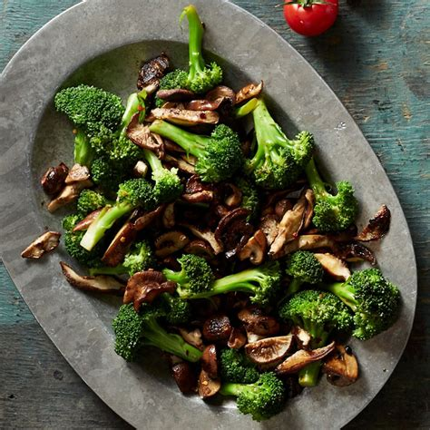

Sauteed Mushrooms and Broccoli Recipe
back to main

A very healthy side dish.
Descripton
A simple yet healthy side, the flair of this recipe comes with the minced garlic and crushed red pepper. Stay healthy yo.
Ingredients
- 1 tablepoon of butter
- 3 broccoli heads
- 16 oz of choice Mushrooms
- salt and pepper
- 2 cloves of garlic,minced
- 2 teaspoons of crushed red pepper
Steps
- put butter in pan, turn flame to medium.
- put in mushrooms and minced garlic, searing the mushrooms on each side for 3 minutes.
- mix broccoli, salt, pepper, and crushed red pepper in pan. continue searing until broccoli begins to brown.
- serve hot.